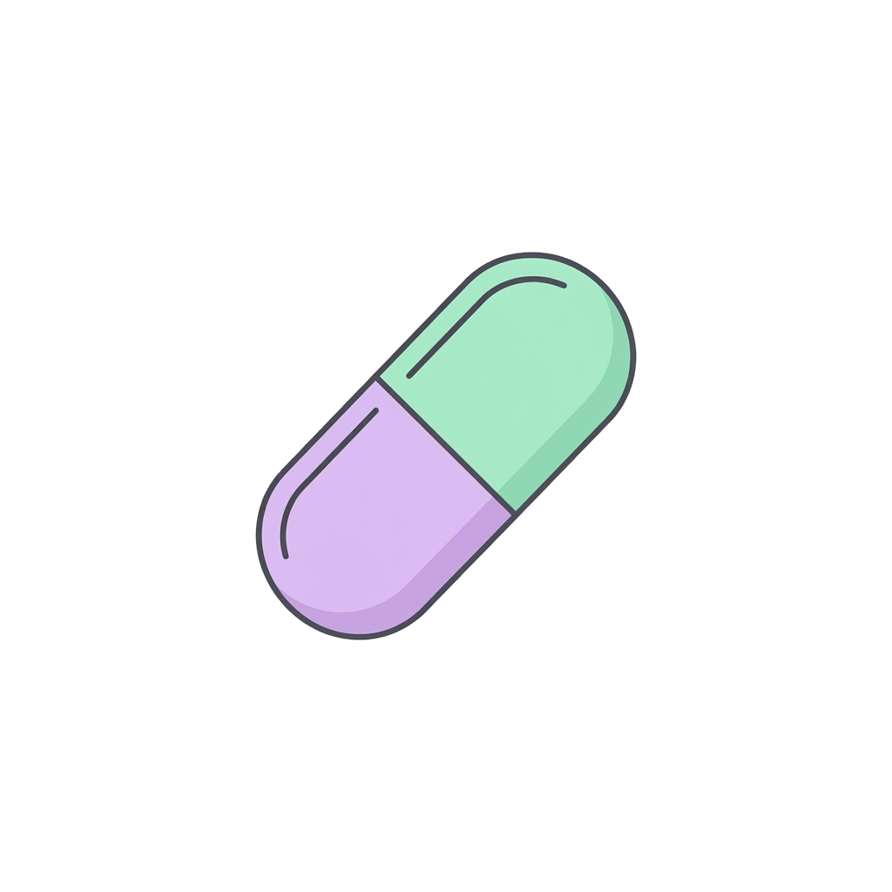
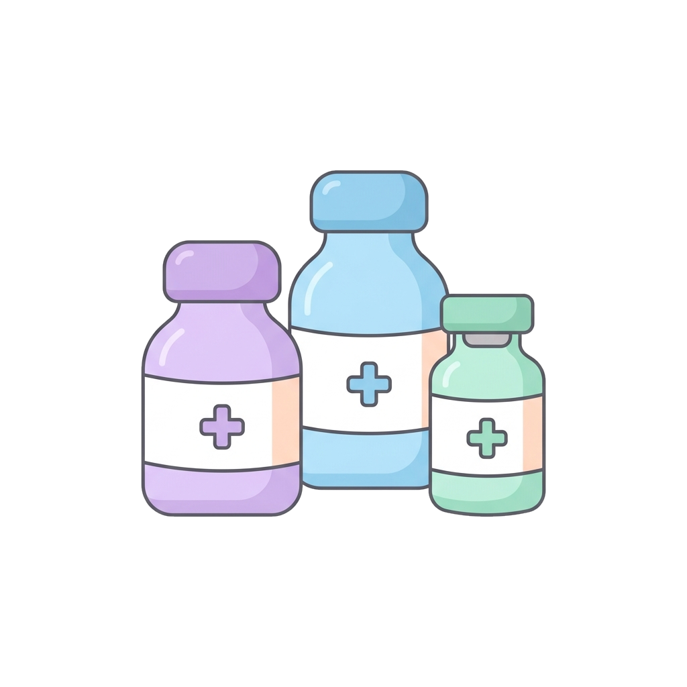
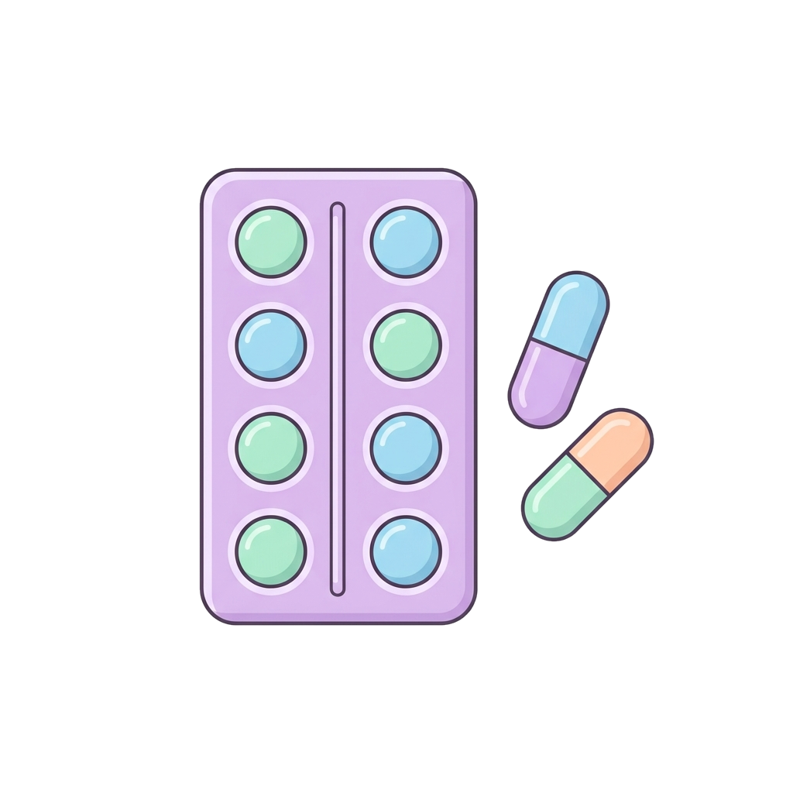
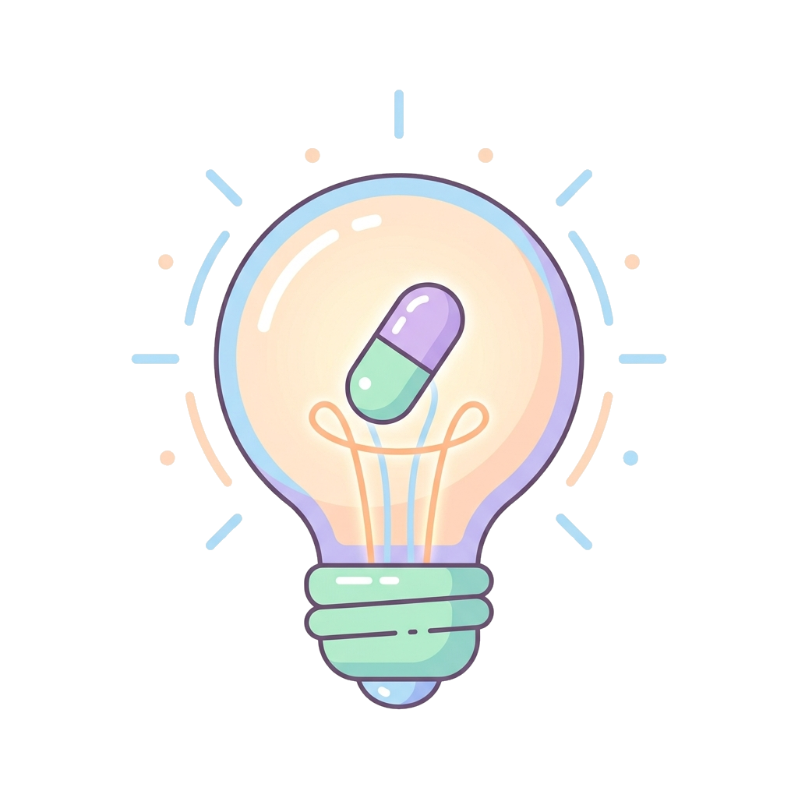

Concetti di base in Farmacologia
Farmacologia
La scienza che studia gli effetti dei farmaci sull'organismo: origine, composizione, proprietà e meccanismo d'azione.

Farmaco
Sostanza chimica che può alterare le funzioni fisiologiche di un sistema biologico. Introdotta in un organismo vivo, provoca un effetto biologico.
Principio attivo
Sostanza chimica presente in un medicinale, responsabile del suo effetto terapeutico.

Medicinale
Prodotto farmaceutico tecnicamente elaborato, contenente uno o più farmaci, per prevenire, curare o alleviare i sintomi di una malattia.
Rimedio
Qualsiasi misura adottata allo scopo di curare una malattia o di ridurne sintomi e disagio.
Dosaggio
Determinazione della quantità e degli orari di somministrazione di un medicinale, per ottenere l'effetto terapeutico desiderato.

Da ricordare
Il farmaco è la sostanza; il principio attivo è ciò che produce l'effetto; il medicinale è il prodotto finito che lo contiene.